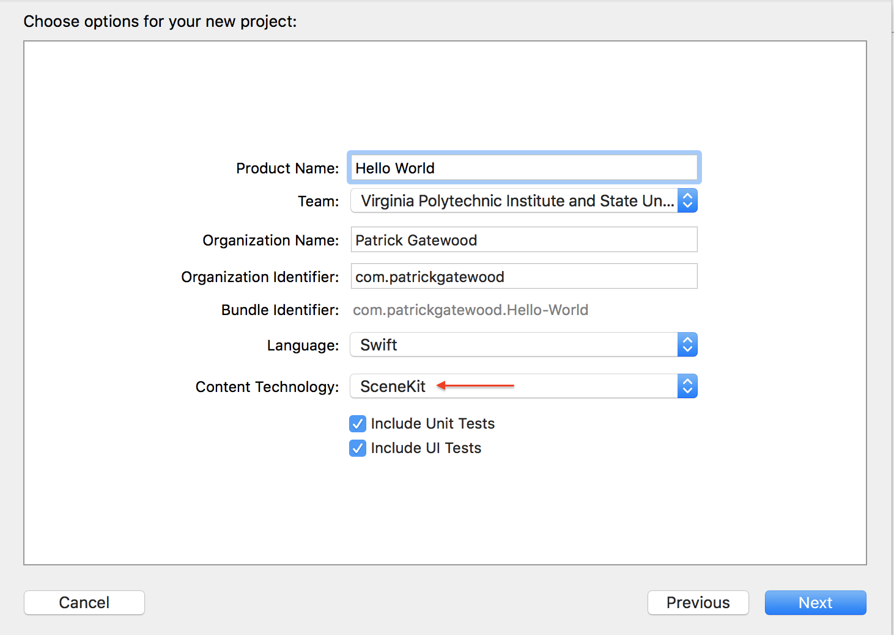

Overview
The hierarchical documentation documents how to build many of the functionalities found in the AR Tour.
Getting Started - Project Creation and Environment Configuration
Creating the project
ARKit projects requires Xcode 9.0 and above.
- Launch Xcode and select Create a new Xcode project from the Xcode welcome screen, or select File → New → Project...
- Choose iOS → Application → Augmented Reality App and click next.

- In the Choose options for your new project dialog, choose SceneKit as the Content Technology
Configuring Your Environment
Creating a new ARKit project generates a sample application, so some cleanup is required.
- In ViewController.swift, delete the sample code from
viewDidLoad().
- Delete everything inside the art.scnassets folder.

Creating an AR Session
ARSession is an object shared by views that require motion tracking and image processing. Your application will use an ARSCNView to display 3D SceneKit objects in the camera view.
ARSession must be configured before it can be run by ARSCNView. To do this, create an instance of ARWorldTrackingConfiguration and configure it to detect horizontal planes. Then the SceneView can run the ARSession.
This configuration can be achieved by adding the following code to the viewWillAppear()
method of your ViewController class.
override func viewWillAppear(_ animated: Bool) {
super.viewWillAppear(animated)
// Create a session configuration
let configuration = ARWorldTrackingConfiguration()
// Detect horizontal planes in the scene
configuration.planeDetection = .horizontal
// Run the view's session
sceneView.session.run(configuration)
}
Leaving an AR View
If your application is more than just one ARSCNView, it may make sense to allow your user to escape the ARSCNView and go back to the previous view. There are two easy ways to do this: a back button and a UINavigationController.
Option 1: Back Button
A back button is familiar to all users. In order to prevent disrupting your user's experience, you'll only want to show it for a few seconds.
Button Setup
Call setupBackButton() in viewWillAppear() to create a back button and
display it for a few seconds.
// Global reference to backButton
var backButton: UIImageView = UIImageView(image: UIImage(named: "back-icon"))
// Creates a back button and adds it to the scene
func setupBackButton() {
// Position the button right under the status bar
backButton.frame = CGRect(x: 25, y: 40, width: 35, height: 35)
view.addSubview(backButton)
// Fade out the back button after a few seconds.
UIView.animateKeyframes(withDuration: 1.0, delay: 6.0, options: .allowUserInteraction, animations: {
self.backButton.alpha = 0
}, completion: { (finished: Bool) in
self.backButton.isHidden = true
})
}
Handling Touch Gestures
You will likely be using hit tests (as learned in the models and physics tutorial to determine if the user tapped an object in the scene. Rather than adding a TapGestureRecognizer to our back button and overcomplicating the way our application handles tap gestures, we can add our back button logic to our ARSCNView's tap gesture handling method.
Add this code to your tap handling method to return to the previous ViewController when the user taps the back button.
@IBAction func userTappedScreen(_ sender: UITapGestureRecognizer) {
let screenTapPoint: CGPoint = sender.location(in: self.view)
// User tapped the back button
if backButton.frame.contains(screenTapPoint) && !backButton.isHidden {
navigationController?.popViewController(animated: true)
return
}
...
// If the back button is hidden and your hit test has no results... show the back button for a few seconds
{
let animationTime = 1.0
let animationDelay = 3.0
// Display back button for a few seconds
UIView.animate(withDuration: animationTime, delay: 0, animations: {
self.backButton.alpha = 1.0
}, completion:{ (finished: Bool) in
self.backButton.isHidden = false
})
UIView.animate(withDuration: animationTime, delay: animationDelay, options: UIViewAnimationOptions.allowUserInteraction, animations: {
self.backButton.alpha = 0
}, completion: { (finished: Bool) in
self.backButton.isHidden = true
})
}
}
Option 2: UINavigationController
If your ARSCNView is the child of a UINavigationController, you can hide the bar and use UINavigationController's built-in "edge-pan to go back" gesture.
In your viewDidLoad() method, set the interactivePopGestureRecognizer
Delegate to your ARViewController. This lets your ARSCNView pass edge-pad gestures to the view's
NavigationController.
override func viewDidLoad() {
...
// Required for "swipe right to go back" gesture with a hidden navigation bar
navigationController?.interactivePopGestureRecognizer?.delegate = self
...
}